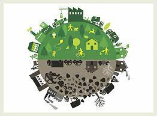

A Fenntartható Fejlődési Célok (FFC-k) 17 célkitűzést foglalnak magukban, amelyek a fenntartható fejlődés elvein alapulnak.
Az Egyesült Nemzetek Szervezete által 2015-ben elfogadott globális program, "Világunk átalakítása" címmel, az international fenntartható fejlődés és fejlesztés terén meghatározott célokat foglalja össze.
Ezek a célok 2030-ra való elérését célozzák meg, és összesen 169 konkrétabb feladatot vagy célpontot tartalmaznak.
Az FFC-k fontosak a korábbi Millenniumi Fejlesztési Célok utódaként, és azok teljesítése mind nemzetközi, mind nemzeti szinten kihívást jelent.
| Célok |
|---|
| A szegénység felszámolása. |
| Az éhezés megszüntetése. |
| Jó egészség, stb... |